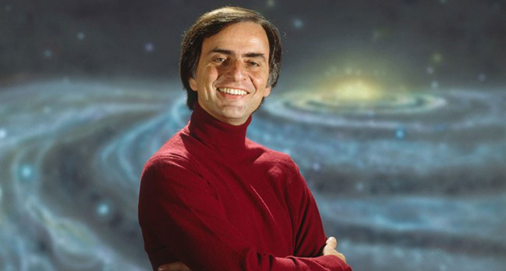

Carl Sagan

Carl Sagan in the Planet Society
Chronology of the Life of Carl Sagan
- November 9, 1934 Born in Brooklyn, New York, U.S.
- 1939 Attends the Universal Exposition in New York, that marks a turning point in his life
- 1951 He graduated in Rahway High School, Rahway, New Jersey. That same year, he matriculated in the University of Chicago,in that university, he graduated 1954 in Arts with special honors and generals, in 1955 he graduated in Sciences and in 1956 he obtained a master's degree in Physics, and later he received his doctorate in
Astronomy and Astrophysics in 1960 - 1960 Works in the laboratory of the geneticist Hermann Joseph Muller until 1962
- 1962 He worked at the Smithsonian Astrophysical Observatory in Cambridge, Massachusetts until 1968
- 1968 He joined Cornell University in Ithaca, New York, where he taught a critical thinking course
- 1971 He was appointed professor and director of the Laboratory of Planetary Studies.
- 1972 Was assigned Associate Director of the Cornell Center for Radiophysics and Space Research, Sagan was linked to the US space program since the beginning of this, prepareding the first physical message sent to outer space: an anodized plate, attached to the space probe Pioneer 10, launched in this year.
- 1980 He was co-founder of the Planetary Society, the largest group in the world dedicated to space research
- 1996 Died in December 20 Seattle, Washington, U.S.
"Imagination will often carry us to worlds that never were. But without it we go nowhere.""
Carl Sagan